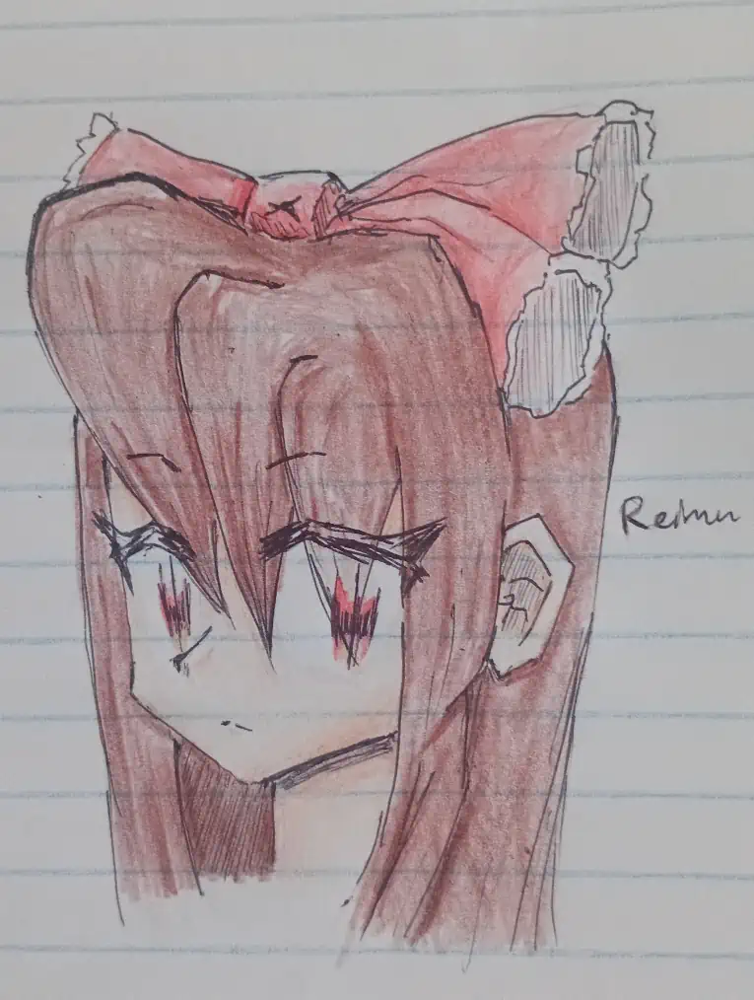

HELOOOOOOOOOOOOOOOOOOOOOOUUUUUUUUUUUUUUUUUUUUUUUU!!!!!!!!!!
Damn, I really am running out of ways to say hi.. ^v^;
But with that aside, Hello everyone! This entry in particular has been a long time coming, and I've had to rewrite many things due to how long it's taken, but here you go!!!
Enjoy~!
~~~
Something that I've been thinking about lately is about how video game are as an entire experience.. Or more so how an artistic work takes advantage of it's format to create an experience, and if we should critique works based on this metric. Lemme elaborate.
So, we all know that Video games are Software, Drawings are Still Images, Movies are Moving Images and Music is Arranged Sound, right? So I've been thinking, is a piece of work "good" (On as objective of a level as possible bcz art is subjective and whatever lol) because of how well it utilizes it's medium? Or is it just good based on how many people it appeals to?
Ok, I'll just tell you what exactly sparked this thought process in me: Sonic CD. It's a charming and wonderful game, isn't it? When you think of it, you remember the beautiful animations, the gorgeous soundtrack and the general "vibe" that it gives off. It's a really cozy game.... or is it? Can you call it a cozy "game" when the good parts of the game are all but it's gameplay? How important should the gameplay be to a video game? Obviously from the title "video game" you'd think it's the #1 priority... but is it? When I think of many of my favourite games, most of them DO have good gameplay, but some don't, and are only really favourites of mine thanks to other aspects of them! Is this a bad thing? Of course not! You should be free to love any game you want, no matter the reason. But does that apply when rating a game objectively? Hmm... that's more complicated, isn't it? Sure, I did say that most of my top rated games have good gameplay, but is that the only reason I view them so highly? Let's take another example; Metal Gear Solid. It's an awesome PS1 Classic, a cool and interesting, almost movie-like story following Solid Snake! It's got a really fun linear, but almost metroidvania-esque progression packed into it's top-down action-game perspective, with some tough but fun bosses sprinkled in-between! ..But when I think about taking away literally everything away EXCEPT it's gameplay..... that's barely MGS! It's still fun, but it's lost a core element!
...well... the thing is, this isn't some kind of new discovery or anything though... idk. I've just been thinking about it.
~~~
This entry was meant to come out last month, but I've kept on rewriting stuff and staying busy with creative stuff... I can't really say I'm sorry for that last one though ^^;
But I do want to introduce to you all a new section of the website! The "other junk" section! This new section will be dedicated to storing a bunch of things that I feel don't fit with the format of the chronicle. This can obviously mean pretty much anything, so to clarify, it will mostly be limited to written things like lists of my favourite games, music and other things. Basically just another sectre of this site for me to goof around and have fun in ^^; (-but organized!)
~~~
Here's a cute picture of Reimu I drew from Touhou!

I drew this in mid Febuary after a long time of not thinking about Touhou, so I put a lot of effort into it. As you could probably tell, it was drawn completely traditionally, which even though I don't show too often here, is my usual way of drawing. I don't have a drawing tablet, so when it comes to sketching things quickly, pencil and paper is my only reliable and comfortable option. Though whenever I do draw digitally (like the 2025 X-mas Sonic drawing) I do it with a mouse (or god forbid a touchpad when one isnt available). I do this by tracing over a super basic sketch done traditionally, then taking a photo with my phone and then sending it to my computer.
I never realized this until late last year, but dang... WEBP is such an incredible format for posting images on this site! It's extremely small, potentially even smaller than JPEG, but it can even preserve alpha and doesn't have nearly as much artifacting! It preserves the original image so well!! The only downside to it, is how few programs (especially older ones) can support it. It is a relatively complex format and it hasn't been around as long as JPEG and PNG, so it makes sense. It's truly quite a shame.
~~~
I think I'd like to clarify something that many of you may be wondering at this point... where's the Touhou game?